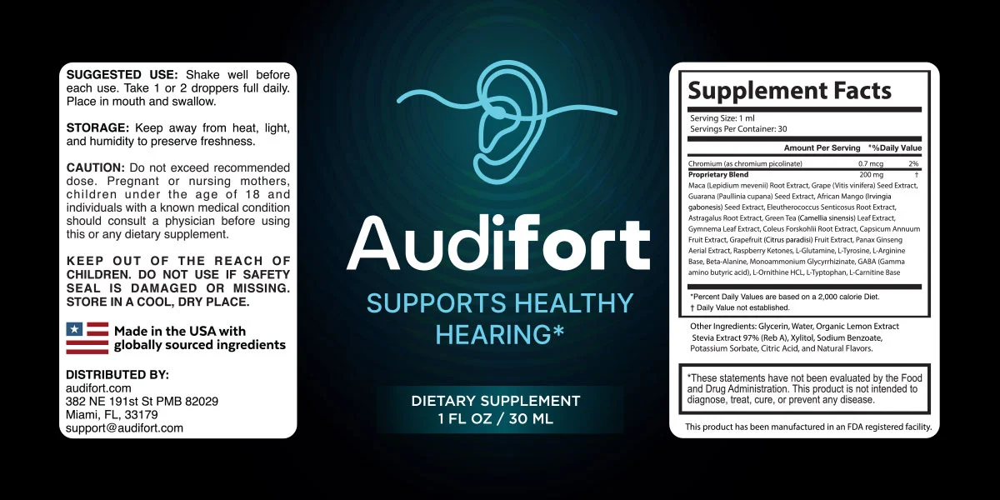

Ingredients
The Audifort Label Ingredients: 22 Items In One 200 mg Blend
The seller's web page says "20+ selected components" and highlights six, while the bottle label shows 22 items in one blend. We follow the label. Per-ingredient amounts are not given, so the research notes are general background.*

| Audifort Supplement Facts, as printed on the bottle label | Detail |
|---|---|
| Serving size | 1 mL |
| Servings per container | 30 (30 mL, 1 fl oz bottle) |
| Chromium (as chromium picolinate) | 0.7 mcg (2% DV) |
| Proprietary blend | 200 mg per serving (Daily Value not established) |
| Blend contains | Maca root extract, grape seed extract, guarana seed extract, African mango seed extract, eleuthero root extract, astragalus root extract, green tea leaf extract, gymnema leaf extract, coleus forskohlii root extract, capsicum annuum fruit extract, grapefruit fruit extract, Panax ginseng aerial extract, raspberry ketones, L-glutamine, L-tyrosine, L-arginine base, beta-alanine, monoammonium glycyrrhizinate, GABA, L-ornithine HCl, L-tryptophan, L-carnitine base |
| Other ingredients | Glycerin, water, organic lemon extract, stevia extract 97% (Reb A), xylitol, sodium benzoate, potassium sorbate, citric acid, natural flavors |
How to read it: the seller web page says "20+ selected components" and highlights six, but the label lists 22 items in one 200 mg blend plus chromium. Twenty-two ingredients sharing 200 mg average about 9 mg each if split evenly, and the label does not give the split.
Directions (label): shake well before each use, take 1 or 2 droppers full daily, place in the mouth and swallow. Store away from heat, light and humidity. Do not exceed the recommended dose.
At A Glance
| Ingredient group | What it is | Worth knowing |
|---|---|---|
| Chromium picolinate | 0.7 mcg | Far below the amounts used in trials. |
| Guarana, green tea | Caffeine sources | Caffeine amount not stated; green tea extract and the liver. |
| Gymnema, ginseng, others | Glucose-active | May add to diabetes medicines. |
| Monoammonium glycyrrhizinate | Licorice compound | Blood pressure and potassium. |
| Grapefruit extract | Citrus extract | May change how medicines are processed. |
| Amino acids and GABA | Eight items | Tryptophan, tyrosine and medicine interactions. |
| Xylitol, stevia, glycerin | Sweeteners and base | Xylitol is dangerous to dogs; keep away from pets. |
See also: Caffeine, licorice, pressure · Diabetes and medicines
Not One Of Them Is A Hearing Nutrient
The items are an energy, blood-sugar and amino-acid mix. None is an established nutrient for hearing. See the hearing claims we skip and what a 200 mg blend of 22 items hides.
See also: Diabetes and medicines · Hearing Claims We Skip
General evidence.
The label by type.
*These statements have not been evaluated by the Food and Drug Administration. This product is not intended to diagnose, treat, cure or prevent any disease, including diabetes. Results vary from person to person.